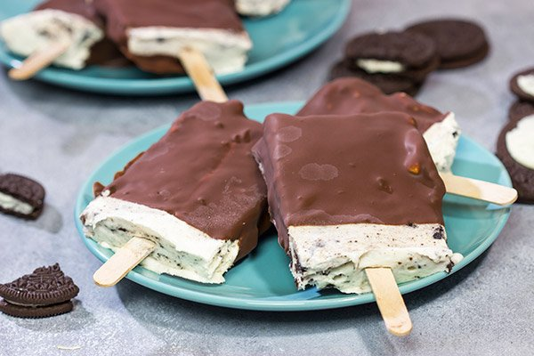
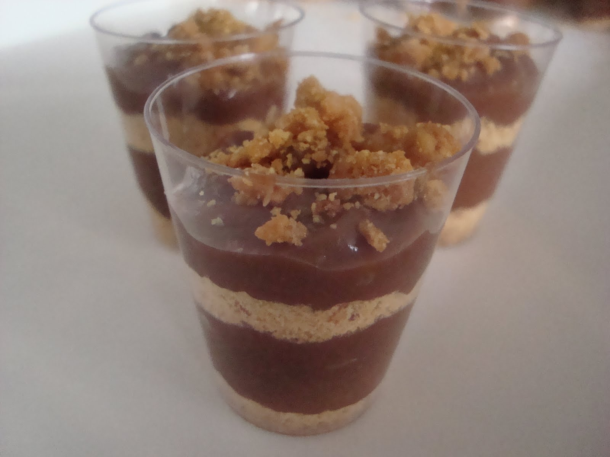
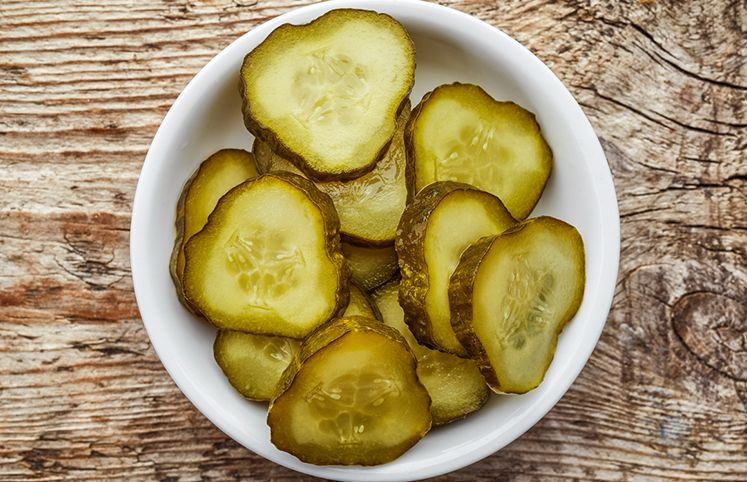

Com o pacote de Oreo ainda fechado, use um rolo de massa ou um objeto parecido para quebrar os biscoitos em pedaços menores. Abra o pacote e preencha ate quase o final com leite. Coloque o palito no pacote, feche a saida com barbante ou prendedor e deixe no congelador por algumas horas. Aproveite!
Picolé de Oreo
- Um pacote de Oreo
- Leite
- Um palito de picolé ou similar
Com o pacote de Oreo ainda fechado, use um rolo de massa ou um objeto parecido para quebrar os biscoitos em pedaços menores. Abra o pacote e preencha ate quase o final com leite. Coloque o palito no pacote, feche a saida com barbante ou prendedor e deixe no congelador por algumas horas. Aproveite!

Em uma panela ao fogo baixo, esquente o leite condensado até começar a borbulhar. Misture o chocolate aos poucos, esperimentando até chegar na sua preferência. No fim, coloque uma parte da paçoca. Deixe descançar na geladeira ate esfriar. Finalize com a outra parte da paçoca por cima. Prontinho!
Brigadeiro com Paçoca
- Leite condensado
- Chocolate em pó
- Paçoca
Em uma panela ao fogo baixo, esquente o leite condensado até começar a borbulhar. Misture o chocolate aos poucos, esperimentando até chegar na sua preferência. No fim, coloque uma parte da paçoca. Deixe descançar na geladeira ate esfriar. Finalize com a outra parte da paçoca por cima. Prontinho!

Em um pote de vidro, coloque metade do volume água e metade vinagre. Esquente o líquido até ferver, misture duas partes de sal para uma de açúcar. Enquanto não termina de ferver, corte o pepino em rodelinhas. Ao fim, tudo no pote e deixe descançar na geladeira por pelo menos um dia. Perfeito!
Picles de Pepino
- Pepino
- Vinagre
- Sal e Açúcar
Em um pote de vidro, coloque metade do volume água e metade vinagre. Esquente o líquido até ferver, misture duas partes de sal para uma de açúcar. Enquanto não termina de ferver, corte o pepino em rodelinhas. Ao fim, tudo no pote e deixe descançar na geladeira por pelo menos um dia. Perfeito!